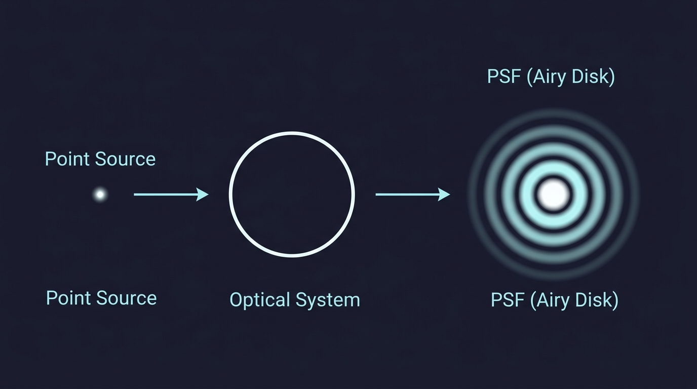
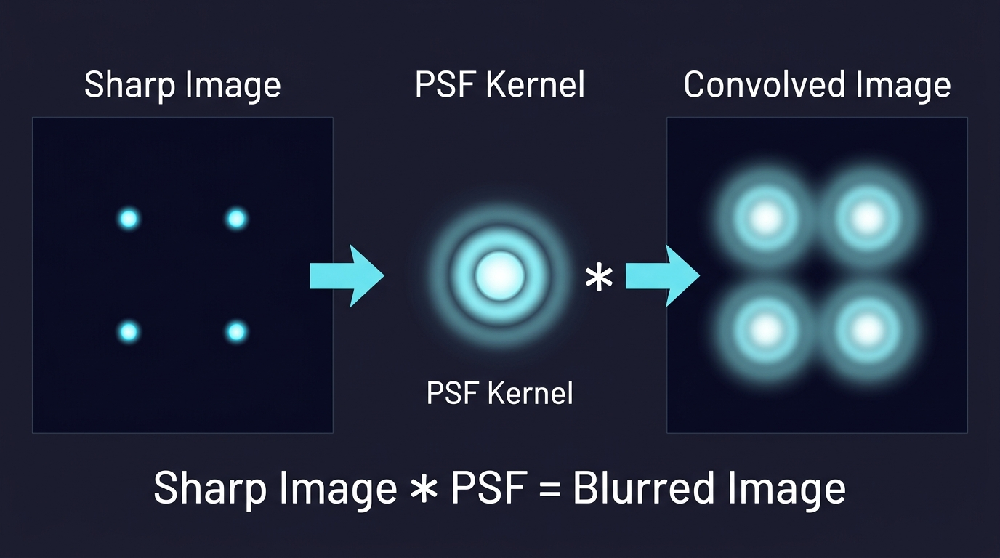
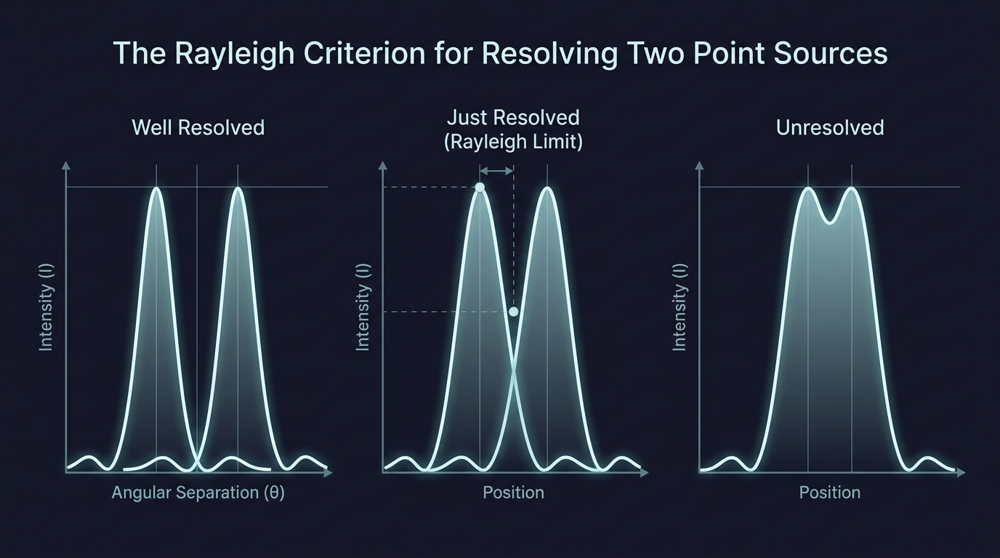

Point Spread Function
The Problem: Why Stars Look Like Blobs
Imagine pointing a powerful telescope at a distant star. A star is so far away that it is essentially a perfect point of light — an infinitely small dot in the sky. In a perfect world, your telescope should record exactly that: a single bright pixel on the detector.
But that is not what happens. Instead you see a bright central spot surrounded by faint concentric rings. The point has been spread out. This is not a flaw of cheap equipment. Even a theoretically perfect telescope does this, because light is a wave and waves diffract when they pass through any finite opening.
The pattern you see — the specific way a point of light gets smeared — is called the Point Spread Function (PSF).

What Is the PSF, Physically?
Think of the PSF as the fingerprint of your imaging system. It answers one simple question:
If I image a single, infinitely small point of light, what does the recorded image look like?
Every optical system — telescope, microscope, camera lens, even your eye — has its own PSF. It encodes all the imperfections and physical limitations of that system into a single pattern. A narrow, tight PSF means sharp images. A wide, spread-out PSF means blurry images.
For a perfect circular aperture (like a telescope mirror with no defects), the PSF is a beautiful pattern called the Airy disk, named after the mathematician George Biddell Airy.
Why Does Diffraction Happen?
Here is the key physical intuition. Light travels as a wave. When a wavefront arrives at a telescope aperture, only a finite portion of the wave passes through. According to Huygens' principle, every point on that wavefront acts as a new source of tiny spherical wavelets. These wavelets travel to the detector and overlap.
At the center of the image, all wavelets arrive roughly in phase — their crests line up — so they add up constructively and produce a bright spot. But slightly off-center, the wavelets from different parts of the aperture arrive slightly out of step. At some angles they partially cancel, at others they reinforce, creating the alternating bright and dark rings of the Airy disk.
This is diffraction. It is not a defect. It is physics. And the PSF is simply the mathematical description of this interference pattern.
The Airy Disk Formula
For a circular aperture of diameter \(D\), the intensity pattern on the focal plane is described by:
\[ I(\theta) = I_0 \left[\frac{2\,J_1(x)}{x}\right]^2 \]
where
\[ x = \frac{\pi\, D\, \sin\theta}{\lambda} \]
Here \(J_1\) is the first-order Bessel function, \(\theta\) is the angle from the optical axis, and \(\lambda\) is the wavelength of light.
Do not worry about memorizing this formula. The physical picture is what matters: the ratio \(D/\lambda\) controls how tight the central spot is. Bigger aperture or shorter wavelength → narrower PSF → sharper image.
The first dark ring — where the intensity drops to zero — occurs at the angle:
\[ \sin\theta \approx 1.22\,\frac{\lambda}{D} \]
This is the angular radius of the Airy disk. For small angles, \(\sin\theta \approx \theta\), so we often write it simply as \(\theta \approx 1.22\,\lambda / D\).
PSF as Convolution: How Images Are Formed
Here is the most powerful idea about the PSF. A real scene is not a single point — it is made of countless point sources. Each point in the scene produces its own copy of the PSF on the detector. The final image is the sum of all these overlapping PSF copies.
Mathematically, this process is called convolution:
\[ \text{Observed Image} = \text{True Scene} * \text{PSF} \]
The symbol \(*\) here means convolution, not multiplication. In simple language: slide the PSF over every bright point in the true scene, stamp down a copy weighted by that point's brightness, and add everything up. The result is the observed (blurred) image.

This is why the PSF matters so much. If you know the PSF of your system, you can work backward — a process called deconvolution — to recover a sharper version of the original scene. This is exactly what was done to fix the blurry images from the Hubble Space Telescope before its corrective optics were installed.
The Rayleigh Criterion: When Can You Tell Two Stars Apart?
Imagine two stars very close together in the sky. Each produces its own Airy disk on the detector. If the stars are far apart, the two Airy disks are clearly separated and you see two distinct spots. But as the stars get closer, the Airy disks start to overlap and eventually merge into one blob.
The Rayleigh criterion gives a practical limit for when two points are "just barely resolved." It says:
Two point sources are just resolved when the central maximum of one falls on the first minimum of the other.
This corresponds to an angular separation of:
\[ \theta_{\min} = 1.22\,\frac{\lambda}{D} \]

This formula has a direct physical message: to resolve finer details, either use a larger aperture \(D\) or observe at a shorter wavelength \(\lambda\). This is why radio telescopes (long wavelength) need to be enormous, while optical telescopes (short wavelength) can resolve the same detail with much smaller mirrors.
Beyond the Perfect Case: Real-World PSFs
Everything above assumes a perfect optical system where diffraction is the only source of blurring. In reality, other factors broaden the PSF:
Atmospheric turbulence — for ground-based telescopes, moving pockets of air with different temperatures bend starlight randomly, smearing the PSF far beyond the Airy disk. This is why stars twinkle. Adaptive optics systems use deformable mirrors to correct for this in real time.
Optical aberrations — imperfections in lens or mirror shape (spherical aberration, coma, astigmatism) distort the PSF into asymmetric or elongated patterns.
Detector effects — finite pixel size, charge diffusion in CCDs, and motion blur each contribute their own broadening.
The observed PSF is the combined result of all these effects. In practice, astronomers often measure the PSF directly from isolated stars in the same image, since stars are natural point sources.
PSF in Other Fields
The PSF is not limited to astronomy. In fluorescence microscopy, the PSF describes how a single fluorescent molecule appears — and super-resolution techniques like STORM and PALM work by fitting the PSF to localize molecules far below the diffraction limit.
In medical imaging (CT, PET, MRI), each modality has its own PSF that describes spatial blurring, and deconvolution methods improve diagnostic image quality.
In photography, the blur you see in out-of-focus regions (bokeh) is the PSF of the camera lens at that particular focus distance. Lens designers carefully shape this PSF to produce aesthetically pleasing background blur.
Quick Summary
The PSF tells you how a point source appears after passing through your imaging system. It is governed by diffraction (Airy disk for a circular aperture) and broadened by real-world imperfections. The observed image is the true scene convolved with the PSF, and knowing the PSF lets you deconvolve to recover sharper images. The Rayleigh criterion uses the PSF width to define the smallest resolvable detail: \(\theta \approx 1.22\,\lambda/D\).
References
- Introduction to Fourier Optics – Joseph W. Goodman – the standard reference textbook on diffraction, imaging, and the PSF.